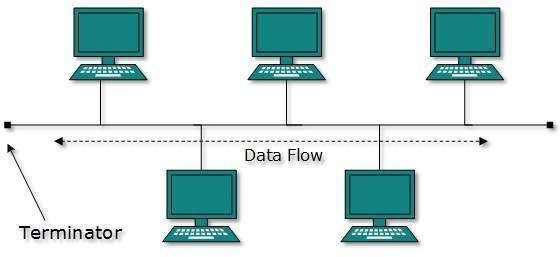
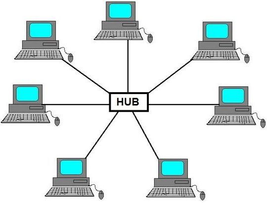
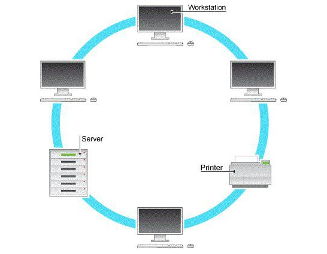

Топология сети — это способ описания конфигурации сети, схема расположения и соединения сетевых устройств. Топология сети позволяет увидеть всю ее структуру, сетевые устройства, входящие в сеть, и их связь между собой.
Виды
Шинная топология сети — топология, при которой все компьютеры сети подключаются к одному кабелю, который используется совместно всеми рабочими станциями. При такой топологии выход из строя одной машины не влияет на работу всей сети в целом. Недостаток же заключается в том, что при выходе из строя или обрыве шины нарушается работа всей сети.

Топология сети «Звезда» — топология, при которой все рабочие станции имеют непосредственное подключение к серверу, являющемуся центром "звезды". При такой схеме подключения, запрос от любого сетевого устройства направляется прямиком к серверу, где он обрабатывается с различной скоростью, зависящей от аппаратных возможностей центральной машины. Выход из строя центральной машины приводит к остановке всей сети. Выход же из строя любой другой машины на работу сети не влияет.

Кольцевая топология сети — схема, при которой все узлы соединены каналами связи в неразрывное кольцо (необязательно окружность), по которому передаются данные. Выход одного ПК соединяется с входом другого. Начав движение из одной точки, данные, в конечном счете, попадают на его начало. Данные в кольце всегда движутся в одном и том же направлении. Такая топология сети не требует установки дополнительного оборудования (сервера или хаба), но при выходе из строя одного компьютера останавливается и работа всей сети.

Ячеистая топология сети — топология, при которой каждая рабочая станция соединяется со всеми другими рабочими станциями этой же сети. Каждый компьютер имеет множество возможных путей соединения с другими компьютерами. Поэтому обрыв кабеля не приведет к потере соединения между двумя компьютерами. Эта топология сети допускает соединение большого количества компьютеров и характерна, как правило, для крупных сетей.
При смешанной топологии применяются сразу несколько видов соединения компьютеров между собой. Встречается она достаточно редко в особо крупных компаниях и организациях.